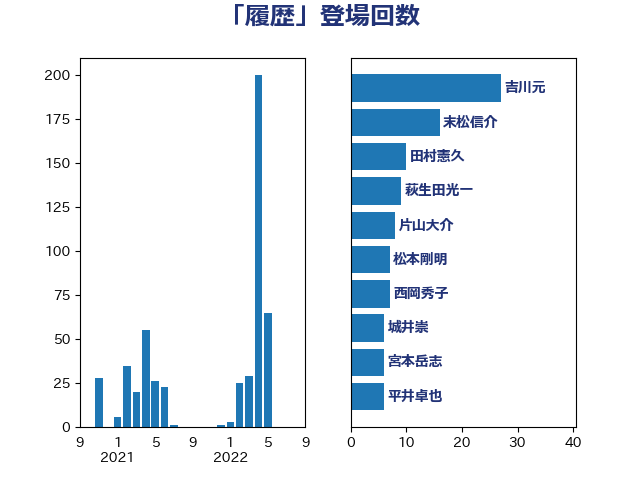

単語「履歴」

| 吉川元 | 立憲民主党 | 27 回 |
| 末松信介 | 自由民主党 | 16 回 |
| 田村憲久 | 自由民主党 | 10 回 |
| 萩生田光一 | 自由民主党 | 9 回 |
| 片山大介 | 日本維新の会 | 8 回 |
| 松本剛明 | 自由民主党 | 7 回 |
| 西岡秀子 | 国民民主党 | 7 回 |
| 城井崇 | 立憲民主党 | 6 回 |
| 宮本岳志 | 日本共産党 | 6 回 |
| 平井卓也 | 自由民主党 | 6 回 |
| 平木大作 | 公明党 | 6 回 |
| 浅野哲 | 国民民主党 | 6 回 |
| 道下大樹 | 立憲民主党 | 6 回 |
| 伊藤孝恵 | 国民民主党 | 5 回 |
| 岡本あき子 | 立憲民主党 | 5 回 |
| 笠浩史 | 無所属 | 5 回 |
| 赤羽一嘉 | 公明党 | 5 回 |
| 輿水恵一 | 公明党 | 5 回 |
| 三木圭恵 | 日本維新の会 | 4 回 |
| 吉良よし子 | 日本共産党 | 4 回 |
| 川合孝典 | 国民民主党 | 4 回 |
| 川田龍平 | 立憲民主党 | 4 回 |
| 斎藤嘉隆 | 立憲民主党 | 4 回 |
| 福島みずほ | 社会民主党 | 4 回 |
| 舩後靖彦 | れいわ新選組 | 4 回 |
| 西村康稔 | 自由民主党 | 4 回 |
| 金子恭之 | 自由民主党 | 4 回 |
| 山本太郎 | れいわ新選組 | 3 回 |
| 水岡俊一 | 立憲民主党 | 3 回 |
| 田村智子 | 日本共産党 | 3 回 |
| 矢倉克夫 | 公明党 | 3 回 |
| 石川大我 | 立憲民主党 | 3 回 |
| 菊田真紀子 | 立憲民主党 | 3 回 |
| 藤川政人 | 自由民主党 | 3 回 |
| 赤嶺政賢 | 日本共産党 | 3 回 |
| 高橋千鶴子 | 日本共産党 | 3 回 |
| 仁木博文 | 無所属 | 2 回 |
| 伊藤岳 | 日本共産党 | 2 回 |
| 古川元久 | 国民民主党 | 2 回 |
| 吉田統彦 | 立憲民主党 | 2 回 |
| 大島敦 | 立憲民主党 | 2 回 |
| 小泉進次郎 | 自由民主党 | 2 回 |
| 末松義規 | 立憲民主党 | 2 回 |
| 本村伸子 | 日本共産党 | 2 回 |
| 武井俊輔 | 自由民主党 | 2 回 |
| 浜口誠 | 国民民主党 | 2 回 |
| 牧島かれん | 自由民主党 | 2 回 |
| 西村智奈美 | 立憲民主党 | 2 回 |
| 赤木正幸 | 日本維新の会 | 2 回 |
| 野田聖子 | 自由民主党 | 2 回 |
| 阿部司 | 日本維新の会 | 2 回 |
| 一谷勇一郎 | 日本維新の会 | 1 回 |
| 上野通子 | 自由民主党 | 1 回 |
| 中島克仁 | 立憲民主党 | 1 回 |
| 中西祐介 | 自由民主党 | 1 回 |
| 中谷一馬 | 立憲民主党 | 1 回 |
| 井上信治 | 自由民主党 | 1 回 |
| 伊波洋一 | 無所属 | 1 回 |
| 佐藤英道 | 公明党 | 1 回 |
| 勝目康 | 自由民主党 | 1 回 |
| 勝部賢志 | 立憲民主党 | 1 回 |
| 國重徹 | 公明党 | 1 回 |
| 塩田博昭 | 公明党 | 1 回 |
| 大野泰正 | 自由民主党 | 1 回 |
| 小沢雅仁 | 立憲民主党 | 1 回 |
| 山下貴司 | 自由民主党 | 1 回 |
| 山岡達丸 | 立憲民主党 | 1 回 |
| 山田賢司 | 自由民主党 | 1 回 |
| 山際大志郎 | 自由民主党 | 1 回 |
| 岡本三成 | 公明党 | 1 回 |
| 岸真紀子 | 立憲民主党 | 1 回 |
| 後藤茂之 | 自由民主党 | 1 回 |
| 杉尾秀哉 | 立憲民主党 | 1 回 |
| 東徹 | 日本維新の会 | 1 回 |
| 松川るい | 自由民主党 | 1 回 |
| 松野博一 | 自由民主党 | 1 回 |
| 森田俊和 | 立憲民主党 | 1 回 |
| 榛葉賀津也 | 国民民主党 | 1 回 |
| 櫻井周 | 立憲民主党 | 1 回 |
| 河野太郎 | 自由民主党 | 1 回 |
| 浅川義治 | 日本維新の会 | 1 回 |
| 浮島智子 | 公明党 | 1 回 |
| 湯原俊二 | 立憲民主党 | 1 回 |
| 熊田裕通 | 自由民主党 | 1 回 |
| 牧原秀樹 | 自由民主党 | 1 回 |
| 玉木雄一郎 | 国民民主党 | 1 回 |
| 田島麻衣子 | 立憲民主党 | 1 回 |
| 石原正敬 | 自由民主党 | 1 回 |
| 石川昭政 | 自由民主党 | 1 回 |
| 石橋通宏 | 立憲民主党 | 1 回 |
| 神田憲次 | 自由民主党 | 1 回 |
| 秋野公造 | 公明党 | 1 回 |
| 竹谷とし子 | 公明党 | 1 回 |
| 篠原孝 | 立憲民主党 | 1 回 |
| 長妻昭 | 立憲民主党 | 1 回 |
| 阿部知子 | 立憲民主党 | 1 回 |
| 高良鉄美 | 無所属 | 1 回 |